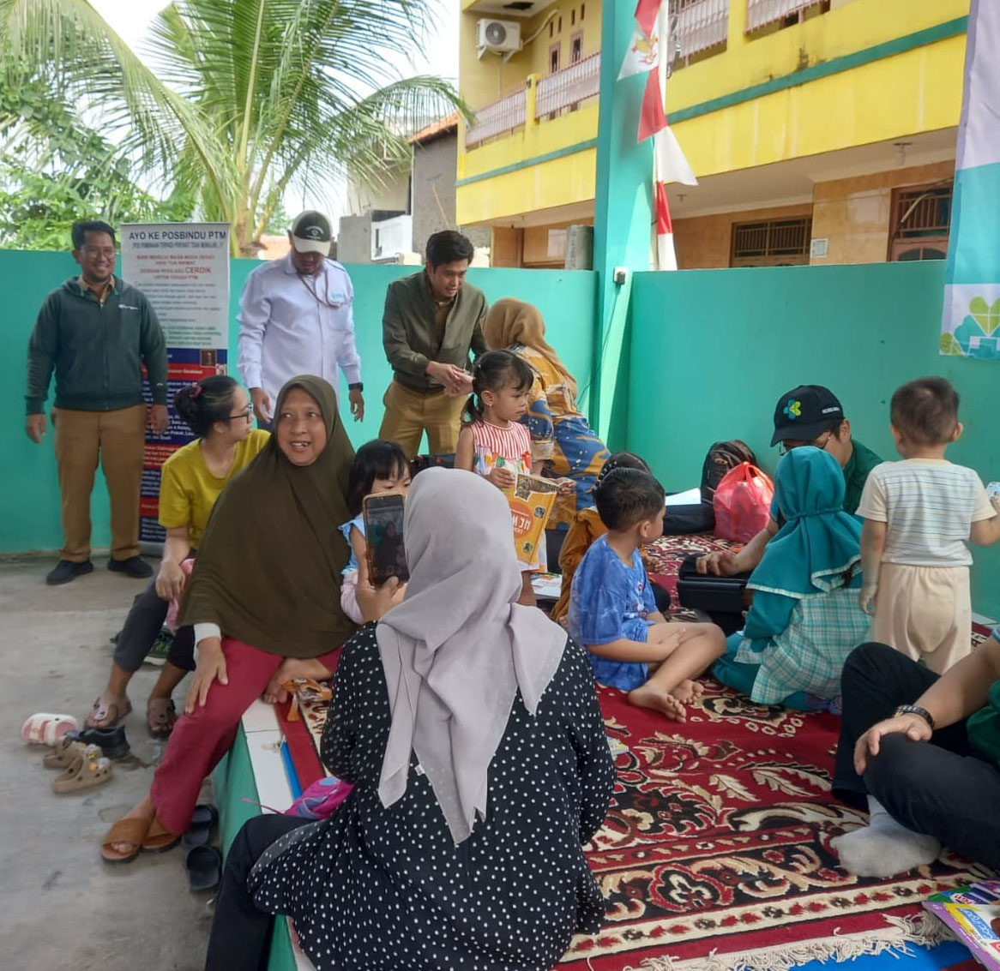

mediakelapadua.web.id
mediakelapadua.web.id
-

Media Kelapa Dua
Kampung Kite Kalo
Bukan Kite yang Ngurusin Siapa Lagi -

Marhaban Ya Ramadhan
Selamat Datang Ya Ramadhan
1447 Hijriah / 2026 Masehi -

Media Kelapa Dua
Kampung Kite Kalo
Bukan Kite yang Ngurusin Siapa Lagi

SUKSESKAN PROGRAM
NYAMUK
AEDES AEGYPTI
ber-WOLBACHIA
Mencegah Deman Berdarah (DBD)
Info Lebih Lanjut dapat Menghubungi :
Kelurahan Kelapa Dua
Pustu Kelapa Dua
Close
Berita Utama


Penanaman Pohon di Bantaran Kali Pesanggrahan
Tanggal, 8 Januari 2026
MediaKada | Koramil 05/Kebon Jeruk dan Kelurahan Kelapa Dua Gelar Aksi Hijau Dalam rangka memperingati Hari Sejuta Pohon dan Hari Lingkungan Hidup, Koramil 05/Kebon Jeruk bersama Kelurahan Kelapa Dua menyelenggarakan kegiatan penanaman pohon di bantaran Kali Pesanggrahan, RT 004/08 Kelurahan Kelapa Dua, Kecamatan Kebon Jeruk, Jakarta Barat, pada Rabu (08/01) siang.
Continue

- 

Warga RW 08 Kelapa Dua Gelar Kerja Bakti Sambut Ramadhan
Tanggal, 25 Januari 2025
MediaKada | Warga RW 08 Kelurahan Kelapa Dua, Kecamatan Kebon Jeruk, Jakarta Barat, menggelar kegiatan kerja bakti serentak pada Minggu (25/01/2026). Kegiatan dimulai pukul 07.00 WIB hingga 10.00 WIB, melibatkan seluruh warga dari RT 001 hingga RT 008.
Continue


Kelurahan Kelapa Dua Gelar Rembuk RW 2026
Tanggal, 13 Januari 2026
MediaKada | Kelurahan Kelapa Dua melaksanakan kegiatan Pra Musyawarah Perencanaan Pembangunan atau Rembuk RW pada hari Selasa, Tanggal 13 Januari 2026, bertempat di Aula Lantai 3 Kantor Kelurahan Kelapa Dua Kecamatan Kebon Jeruk Jakarta Barat, kegiatan Rembuk RW Kelurahan berlangsung dari pukul 13.00 hingga 15.30 WIB.
ContinueBerita Wilayah
-

Musrenbang Tingkat Walikota Jakarta Barat
MediaKada | Pemerintah Kota Administrasi Jakarta Barat menyelenggarakan Musyawarah Perencanaan Pembangunan (Musrenbang) Tingkat Kota untuk Tahun Anggaran 2026. Acara berlangsung di Ruang Ali Sadikin, Kantor Walikota Jakarta Barat.
-

Penyerahan SK Bank Sampah RW 08 Kelurahan Kelapa Dua
MediaKada | Kegiatan penyerahan Surat Keputusan (SK) Bank Sampah RW 08 yang diserahkan langsung oleh Koordinator Bank Sampah Kelurahan Kelapa Dua, Lina, kepada Ketua Bank Sampah RW 08, H. Uus Agustino.
-

Posko RW 03 Kelapa Dua Salurakan Bantuan Bencana Sumatera
MediaKada | Posko Penanggulangan Bencana RW 03 Kelurahan Kelapa Dua bergerak cepat dalam merespons musibah banjir bandang dan tanah longsor yang melanda wilayah Sumatera.
-

Masyarakat Desa untuk Tingkatkan Pelayanan Kesehatan
MediaKada | Dalam upaya meningkatkan mutu pelayanan kesehatan, masyarakat Kelurahan Kelapa Dua diajak berpartisipasi aktif dalam mengidentifikasi kebutuhan kesehatan.
-

Koordinasi Wilayah (Rakorwil) Kelurahan Kelapa Dua
MediaKada | Kelurahan Kelapa Dua menyelenggarakan Rapat Koordinasi Wilayah (Rakorwil) Kamis, 4 Desember 2025 bertempat di Aula Gedung Sasana Purna Caraka, Komp. Youhub RW 04.
-

Pemeriksaan Kesehatan Warga Kelapa Dua
MediaKada | Kelurahan Kelapa Dua mengadakan kegiatan pemeriksaan kesehatan berupa skrining HPV DNA. Kegiatan ini bertujuan untuk meningkatkan kesadaran masyarakat akan pentingnya deteksi dini kanker serviks.
-

RW 08 Kelapa Dua Terima Bantuan Soundsystem
mediaKada | Pada tanggal 10 Desember 2025, dinas terkait menyerahkan satu paket soundsystem kepada Ketua RW 08 Kelurahan Kelapa Dua, Bisri Ali. Penyerahan dilakukan di Kantor Walikota Jakarta Barat dengan didampingi oleh tim sukses Ima Mardiah.
-

Posyandu Siklus Hidup Melati RW 08 Kelurahan Kelapa Dua Gelar Pelayanan Kesehatan
Kegiatan Posyandu Siklus Hidup Melati RW 08 Kelurahan Kelapa Dua kembali digelar dengan penuh semangat dan warga hadir dengan penuh antusias.
-
Berita Lama
Media informasi berita sebelumnya, seputar Kelapa Dua dan Sekitarnya.

Berita Pilihan

Tugu Kelapa Dua

Ondel-ondel

Kabel Semrawut

Lenong Betawi
Info Wilayah
Gallery


Video


Selamat menonton dan jangan lupa
Subscribe, Like, Share, dan Comment
Contact Us
Bekerjasama :


mediakelapadua.web.id
- Jl. H. Kelik Gg lada No.102, Kelapa Dua Kebon Jeruk Jakarta Barat 11550